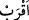
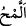

77. Göklerin ve yerin gaybı Allah’a âiddir. Kıyâmetin kopması ise, göz açıp
kapama gibi veya daha az bir zamandan ibârettir. Şüphesiz Allah, her şeye
kâdirdir.
“Göklerin ve yerin gaybı” yâni onlarda kullara gayb/gizli olan şeylerin ilmi, özel
olarak “Allah’a âiddir.” müstakil veya ortak olmak sûretiyle başka birine âid değildir.
el-İrşâd’da der ki: “Burada yüce Allah Teâlâ’nın ilminin huzûrî (her an hâzır ve var)
olduğuna işâret vardır. Çünkü gaybların gerçekleşmesi, Allah’a nisbetle zâten bir ilim
ifâde eder, yâni bilinmektedir. Onun için âyette: “Göklerin ve yerin gaybının ilmi
Allah’a âiddir.” buyurulmamıştır.
Gayblardan birisi olan “kıyâmetin kopması ise,” süratle gelme konusunda “göz açıp
kapama gibi”; yâni Allah Teâlâ’nın kıyâmeti getirmesi, sizin gözünüzü açıp
kapamanızdan çok daha kolaydır “veya daha az bir zamandan ibârettir.” Hatta sürat ve
kolaylıkla ilgili onun zikredilen durumu, göz açıp kapamaktan daha kısa ve zaman
bakımından daha hızlıdır.
Kâşifî der ki: “
” daha yakın demektir. Çünkü göz açıp kapamada iki fiil vardır:
Biri göz kapağını kapatmak, diğeri açmak. Ölüleri diriltmek şeklinde olan kıyâmet ise
bir fiildir. Onun gözün bu iki hareketinin yarı zamanında meydana gelmesi mümkündür.”
“
(saat, zaman)” kıyâmetin koptuğu vakte isim olarak verilmiştir. Çünkü kıyâmet,
kendisinde büyük işlerin meydana geleceği az bir zamandır.
“
”, süratle bakmak demektir. Göz bebeğinin üstten alta ansızın inmesi veya
dönmesi anlamına demektir.
Âyetteki “ev (veya)” ifâdesi şüphe bildirmek için değil muhâtapları kıyâmetin
kopmasını göz açıp kapamaya benzetme ve daha yakın olduğunu söyleme konusunda
muhayyer bırakmak içindir. Göz açıp yummanın misal verilmesi, ondan daha az bir
zaman süresi bilinmediği içindir.
“Şüphesiz Allah, her şeye kâdirdir.” O kıyâmeti koparmaya ve yaratılmışları
diriltmeye kâdirdir. Bu, O’nun kâdir olduğu şeylerin bir kısmıdır. Yâni Cenâb-ı Hak
mahlûkâtı tedricen diriltmeye kâdir olduğu gibi bir defada diriltmeye de kâdirdir. İmdi
Allah onların zuhûrunun başlangıcından haber verdi ki ilk yaratılışlarını (mebde’),
tekrar yaratılmalarına (maad) istidlal etsinler.
Bilesin ki onlar “Gerçi kıyâmet geç gelir, fakat mutlaka gelir.” dediler. Yâni o bizim
yanımızda her ne kadar uzaksa da Allah Teâlâ nezdinde yakındır. Onun için ona
hazırlanmak lâzımdır.
Enes (r.a.)’dan rivâyet edilmiştir: Bir adam Nebî (s.a.)’e: “Kıyâmet ne zaman
kopacak?” diye sordu. Efendimiz (a.s.): “Onun için ne hazırladın?” buyurdu. O da:
“Hiçbir şey, ancak ben Allah ve Rasûlünü seviyorum.” dedi. Bunun üzerine Peygamber
(s.a.): “Sen sevdiğinle berâbersin” buyurdu.[176]
Kişinin sevdiği ile berâber olması, din ve tevhîdde berâber olmasına bağlıdır.
Emredilen şeyleri yapıp yasaklanan şeyleri terk etmek de bunun gereklerindendir.